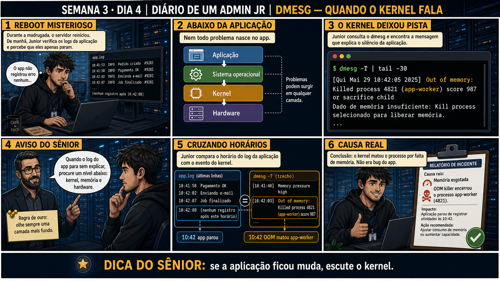

DIARIO DE UM ADMIN JR. | FASE 1 — LINUX, DO BÁSICO AO AVANÇADO
🔗 Conecta com os últimos dois dias: journalctl e syslog registram o que a
APLICAÇÃO e o systemd têm a dizer. Mas hoje o silêncio é total — nem o app registrou erro, porque o problema
aconteceu um nível abaixo, no kernel. Quando o log da aplicação simplesmente para, é hora de escutar mais fundo.
🔓 Privilégio de hoje: investigar eventos de kernel e hardware com dmesg. Você
ganha o hábito de olhar uma camada abaixo da aplicação quando o log dela para sem explicação nenhuma.
Semana 3 · Dia 4 | Nível Júnior
dmesg: Quando o Kernel Fala
se a aplicação ficou muda sem erro nenhum, escute o kernel
ANTES DE ALTERAR, OBSERVE. DEPOIS DE ALTERAR, VALIDE.

1. O chamado
Durante a madrugada o servidor reiniciou sozinho. De manhã, o log da aplicação
simplesmente PARA às 10:42 — nenhum erro registrado, nenhuma explicação. O app não tem culpa nenhuma nisso:
o motivo está numa camada abaixo dele.
💡 Passa o mouse nas palavras destacadas pra ver uma dica rápida — clica se quiser a explicação completa com analogia.
2. O sênior te conta
🧑🏫 antes dos termos técnicos, a história de hoje
Hoje o servidor reiniciou sozinho durante a madrugada. De manhã, o Júnior abriu o app.log — e o log
simplesmente PARA às 10:42, sem nenhum erro. Nenhuma explicação, nenhum aviso. Ele ficou preso ali,
relendo as mesmas linhas de novo, achando que tinha perdido algo. Expliquei: "não tem nada pra achar
aí. O app não é culpado — o motivo está numa camada abaixo dele."
Foi a primeira vez que expliquei essa ideia de camadas: aplicação, systemd, e embaixo de tudo, o kernel —
a sala de máquinas do navio, que funciona mesmo sem os passageiros verem. Rodamos dmesg -T e
lá estava: Out of memory: Killed process 4821 (app-worker), com timestamp poucos segundos
antes do log parar. O kernel tem um mecanismo — o OOM killer — que mata processos automaticamente quando
a memória se esgota. Não foi bug do app. Foi o segurança do navio jogando carga pela borda.
E teve o raciocínio mais importante do dia: um log limpo NÃO é prova de estabilidade. O Júnior quase
concluiu "sem erro no log, então estava tudo bem" — expliguei que um log limpo às vezes só prova que a
aplicação foi morta rápido demais pra registrar qualquer coisa. Silêncio, às vezes, é a pista mais
importante de todas.
3. Decodificador de conceitos
Clica em qualquer termo pra ver a definição completa e uma analogia do dia a dia:
4. Ferramentas e leitura da evidência
Comando
O que observar e por que importa
dmesg -T | tail -30
Mostra os últimos eventos do kernel, com timestamp legível para humanos.
dmesg -l err,warn
Filtra só eventos de erro e aviso, cortando o ruído de mensagens informativas.
$ dmesg -T | tail -30
[Qui Mai 29 10:42:05 2025] Out of memory: Killed process 4821 (app-worker) score 987 or sacrifice child
[Qui Mai 29 10:42:05 2025] Dado de memória insuficiente: Kill process selecionado para liberar memória.
Comparando os horários entre app.log (parou às 10:42:08) e o dmesg (matou o
processo às 10:42:03), a coincidência de poucos segundos confirma a mesma causa.
5. Laboratório guiado — pegue na mão, comando por comando
Segurança: execute os testes apenas em VM descartável e confirme nomes de discos, hosts e arquivos antes de cada comando.
Ação: Leia os eventos mais recentes do kernel, mesmo sem incidente nenhum.
dmesg -T | tail -30
Resultado esperado: lista de eventos de kernel com timestamp legível.
Por que fizemos isso: conhecer o "normal" do dmesg antes de um incidente é o que te permite reconhecer rápido quando algo foge do padrão numa investigação real.
Cilada comum: rodar dmesg sem o -T e tentar interpretar timestamps em "segundos desde o boot" — sem conversão pra data/hora legível, correlacionar com outros logs vira matemática desnecessária.
Ação: Filtre só eventos de erro e aviso, cortando ruído informativo.
dmesg -l err,warn
Resultado esperado: lista bem menor, só com eventos relevantes, sem o ruído informativo.
Por que fizemos isso: o kernel gera MUITAS mensagens informativas de rotina — filtrar por prioridade é o que separa sinal real de ruído de fundo.
Cilada comum: filtrar tão agressivamente que perde contexto — às vezes um evento "info" logo antes de um "err" é parte da mesma história.
Ação: Pesquise o significado de uma mensagem de dmesg que você não reconheça.
# nenhum comando específico — leia a mensagem real da sua VM e pesquise o termo técnico
Resultado esperado: compreensão do que aquele evento específico de kernel significa.
Por que fizemos isso: mensagens de kernel usam jargão denso — construir esse vocabulário aos poucos, com calma, é mais barato que tentar aprender tudo sob pressão de um incidente real.
Cilada comum: ignorar uma mensagem só porque parece "normal demais pra ser importante" — algumas mensagens de warning são os primeiros sinais de um problema que vai piorar.
🧑🏫 Aqui entra o Mentor (em breve): se uma mensagem de kernel parecer indecifrável, este é o ponto onde o chat com o Sênior-IA vai ajudar a traduzir o jargão técnico.
Ação: Pratique correlacionar horários entre dmesg e o log de uma aplicação de teste.
dmesg -T | tail -5
tail -5 /var/log/syslog
Resultado esperado: dois eventos alinhados no tempo, mesmo que de fontes diferentes.
Por que fizemos isso: foi essa correlação exata (poucos segundos de diferença) que confirmou a causa real hoje — treinar esse olhar é o que faz a diferença numa investigação de verdade.
Cilada comum: assumir causa só por proximidade de horário sem checar o conteúdo das mensagens — coincidência de tempo é uma pista forte, não uma prova sozinha.
Ação: Documente um relatório de incidente completo.
# não é comando de shell — é o relatório final
# ex: "Causa raiz: OOM killer matou app-worker (PID 4821) às 10:42:03 por falta de memória. Impacto: app.log parou sem erro. Ação: investigar consumo de memória do app-worker."
Resultado esperado: relatório completo, com causa raiz identificada no kernel, não na aplicação.
Por que fizemos isso: registrar a causa na camada CERTA evita que alguém, meses depois, tente "corrigir um bug" no código do app que nunca existiu.
Cilada comum: escrever no relatório "aplicação travou" quando na verdade foi morta pelo kernel — a diferença muda completamente pra onde vai o esforço de correção.
6. Antes de ver as opções — tenta responder
🧠 Recall ativo: quando o log da aplicação simplesmente para, sem erro nenhum registrado, em qual
camada abaixo dela você deve procurar a explicação?
No kernel —
camada abaixo do sistema operacional em nível de usuário. Eventos como falta de memória
(OOM killer)
acontecem ali, silenciosamente pra aplicação, mas totalmente visíveis no dmesg.
QUESTÃO 1 de 3
7. Questão comentada — clica numa alternativa
O log da aplicação para sem nenhum erro registrado, e o servidor reiniciou
durante a madrugada. Qual é o próximo passo correto?
💡 Analogia do Sênior para Fixar: O buffer do 'dmesg' é como o relatório da autópsia ou do parto do computador: registra o reconhecimento de cada chip, placa PCIe e disco no instante do boot.
QUESTÃO 2 de 3 — cenário de erro real
7.1 dmesg mostra "Out of memory: Killed process" — o que isso realmente significa?
A mensagem completa é Out of memory: Killed process 4821 (app-worker) score 987 or sacrifice
child, com timestamp poucos segundos antes do log da aplicação parar.
Qual é a leitura correta dessa mensagem?
💡 Analogia do Sênior para Fixar: A flag 'dmesg -T' é como adicionar a data e a hora no carimbo da foto: traduz os segundos brutos do boot para o horário legível do relógio da parede.
QUESTÃO 3 de 3 — detalhe que confunde todo iniciante
7.2 "Se o log da aplicação está limpo, é porque não teve erro nenhum, certo?"
Um colega vê o app.log sem nenhuma linha de erro e conclui que a aplicação nunca teve
problema nenhum naquela madrugada.
Essa conclusão está correta?
💡 Analogia do Sênior para Fixar: Erros de 'I/O error' no dmesg são como o barulho de metal raspando no motor: avisam que o disco rígido está falhando fisicamente antes do sistema travar de vez.
8. Procedimento profissional
Confirme onde o log da aplicação parou, com timestamp exato.
Se não houver erro explicando a parada, desça uma camada: consulte dmesg -T.
Procure eventos próximos ao horário da parada, especialmente OOM killer ou hardware.
Correlacione os horários dos dois logs pra confirmar a mesma causa.
Documente a causa real (kernel, não bug do app) e a ação recomendada.
Prevenção — o que evita repetir esse tipo de problema
Configure alertas de monitoramento de memória com margem de aviso (ex: 80%), pra agir antes
do OOM killer precisar entrar em ação. Documente no runbook do time o hábito de checar dmesg sempre que um
log de aplicação parar sem erro — vira reflexo, não descoberta acidental.
9. Validação e encerramento
dmesg foi consultado quando o log da aplicação não explicava a falha.
Os horários dos dois logs foram correlacionados pra confirmar a mesma causa.
A causa raiz foi identificada corretamente na camada certa (kernel, não app).
Um relatório de incidente foi documentado com causa, impacto e ação recomendada.
Rollback e limites
dmesg é somente leitura — não existe rollback aqui. O cuidado real é não concluir
precipitadamente que é "bug do app" sem antes checar a camada de baixo, o que levaria a uma correção no
lugar errado.
💡 Sobre repetição espaçada: "descer uma camada quando o log de cima não
explica" conecta journalctl (systemd), syslog (aplicação) e agora dmesg (kernel) — três camadas da mesma
investigação. O Anki vai conectar as três.
10. Resposta final
Alternativa correta: B. Nesta aula, a decisão correta foi consultar
dmesg -T | tail -30 pra investigar a camada do kernel, um nível abaixo da aplicação. O ponto central do
caso é este: se a aplicação ficou muda, escute o kernel.
🔓 O que você desbloqueou hoje
Capacidade de investigar eventos de kernel e hardware quando a aplicação não
explica a própria falha. Amanhã fecha a Semana 3: last, lastlog e auditd, pra responder com evidência
cruzada quem acessou o servidor e quando.